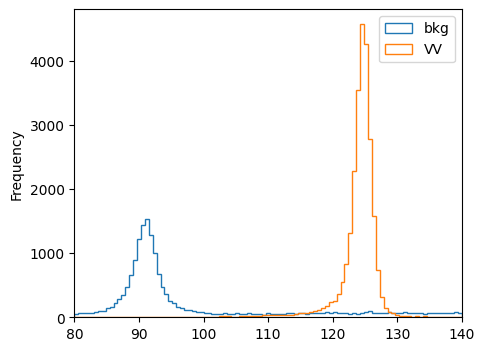
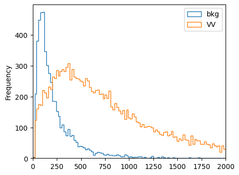

1. Loading Datasets#
Authors: Javier Duarte, Raghav Kansal
1.1. Load datasets from ROOT files using uproot#
Here we load the ROOT datasets in python using uproot (see: scikit-hep/uproot). For more information about how to use uproot, see the Uproot and Awkward Array for columnar analysis HATS@LPC 2023 tutorial.
import uproot
Download datasets from Zenodo:
%%bash
mkdir -p data
wget -O data/ntuple_4mu_bkg.root "https://zenodo.org/record/3901869/files/ntuple_4mu_bkg.root?download=1"
wget -O data/ntuple_4mu_VV.root "https://zenodo.org/record/3901869/files/ntuple_4mu_VV.root?download=1"
Show code cell output
--2023-08-12 00:12:36-- https://zenodo.org/record/3901869/files/ntuple_4mu_bkg.root?download=1
Resolving zenodo.org (zenodo.org)... 188.185.124.72
Connecting to zenodo.org (zenodo.org)|188.185.124.72|:443... connected.
HTTP request sent, awaiting response... 200 OK
Length: 8867265 (8.5M) [application/octet-stream]
Saving to: ‘data/ntuple_4mu_bkg.root’
0K .......... .......... .......... .......... .......... 0% 467K 18s
50K .......... .......... .......... .......... .......... 1% 471K 18s
100K .......... .......... .......... .......... .......... 1% 105M 12s
150K .......... .......... .......... .......... .......... 2% 469K 14s
200K .......... .......... .......... .......... .......... 2% 80.3M 11s
250K .......... .......... .......... .......... .......... 3% 163M 9s
300K .......... .......... .......... .......... .......... 4% 139M 8s
350K .......... .......... .......... .......... .......... 4% 132M 7s
400K .......... .......... .......... .......... .......... 5% 473K 8s
450K .......... .......... .......... .......... .......... 5% 108M 7s
500K .......... .......... .......... .......... .......... 6% 168M 6s
550K .......... .......... .......... .......... .......... 6% 138M 6s
600K .......... .......... .......... .......... .......... 7% 155M 5s
650K .......... .......... .......... .......... .......... 8% 479K 6s
700K .......... .......... .......... .......... .......... 8% 45.9M 6s
750K .......... .......... .......... .......... .......... 9% 101M 5s
800K .......... .......... .......... .......... .......... 9% 146M 5s
850K .......... .......... .......... .......... .......... 10% 154M 5s
900K .......... .......... .......... .......... .......... 10% 144M 4s
950K .......... .......... .......... .......... .......... 11% 479K 5s
1000K .......... .......... .......... .......... .......... 12% 109M 5s
1050K .......... .......... .......... .......... .......... 12% 68.5M 4s
1100K .......... .......... .......... .......... .......... 13% 61.4M 4s
1150K .......... .......... .......... .......... .......... 13% 117M 4s
1200K .......... .......... .......... .......... .......... 14% 153M 4s
1250K .......... .......... .......... .......... .......... 15% 479K 4s
1300K .......... .......... .......... .......... .......... 15% 161M 4s
1350K .......... .......... .......... .......... .......... 16% 58.7M 4s
1400K .......... .......... .......... .......... .......... 16% 149M 4s
1450K .......... .......... .......... .......... .......... 17% 475K 4s
1500K .......... .......... .......... .......... .......... 17% 138M 4s
1550K .......... .......... .......... .......... .......... 18% 113M 4s
1600K .......... .......... .......... .......... .......... 19% 117M 4s
1650K .......... .......... .......... .......... .......... 19% 150M 4s
1700K .......... .......... .......... .......... .......... 20% 143M 3s
1750K .......... .......... .......... .......... .......... 20% 474K 4s
1800K .......... .......... .......... .......... .......... 21% 132M 4s
1850K .......... .......... .......... .......... .......... 21% 122M 3s
1900K .......... .......... .......... .......... .......... 22% 156M 3s
1950K .......... .......... .......... .......... .......... 23% 132M 3s
2000K .......... .......... .......... .......... .......... 23% 149M 3s
2050K .......... .......... .......... .......... .......... 24% 475K 3s
2100K .......... .......... .......... .......... .......... 24% 151M 3s
2150K .......... .......... .......... .......... .......... 25% 131M 3s
2200K .......... .......... .......... .......... .......... 25% 162M 3s
2250K .......... .......... .......... .......... .......... 26% 472K 3s
2300K .......... .......... .......... .......... .......... 27% 156M 3s
2350K .......... .......... .......... .......... .......... 27% 127M 3s
2400K .......... .......... .......... .......... .......... 28% 175M 3s
2450K .......... .......... .......... .......... .......... 28% 167M 3s
2500K .......... .......... .......... .......... .......... 29% 478K 3s
2550K .......... .......... .......... .......... .......... 30% 49.4M 3s
2600K .......... .......... .......... .......... .......... 30% 176M 3s
2650K .......... .......... .......... .......... .......... 31% 169M 3s
2700K .......... .......... .......... .......... .......... 31% 171M 3s
2750K .......... .......... .......... .......... .......... 32% 141M 3s
2800K .......... .......... .......... .......... .......... 32% 477K 3s
2850K .......... .......... .......... .......... .......... 33% 54.7M 3s
2900K .......... .......... .......... .......... .......... 34% 155M 3s
2950K .......... .......... .......... .......... .......... 34% 149M 3s
3000K .......... .......... .......... .......... .......... 35% 157M 3s
3050K .......... .......... .......... .......... .......... 35% 139M 2s
3100K .......... .......... .......... .......... .......... 36% 479K 3s
3150K .......... .......... .......... .......... .......... 36% 48.0M 3s
3200K .......... .......... .......... .......... .......... 37% 138M 2s
3250K .......... .......... .......... .......... .......... 38% 159M 2s
3300K .......... .......... .......... .......... .......... 38% 155M 2s
3350K .......... .......... .......... .......... .......... 39% 129M 2s
3400K .......... .......... .......... .......... .......... 39% 479K 2s
3450K .......... .......... .......... .......... .......... 40% 110M 2s
3500K .......... .......... .......... .......... .......... 40% 58.4M 2s
3550K .......... .......... .......... .......... .......... 41% 129M 2s
3600K .......... .......... .......... .......... .......... 42% 152M 2s
3650K .......... .......... .......... .......... .......... 42% 478K 2s
3700K .......... .......... .......... .......... .......... 43% 117M 2s
3750K .......... .......... .......... .......... .......... 43% 65.4M 2s
3800K .......... .......... .......... .......... .......... 44% 74.7M 2s
3850K .......... .......... .......... .......... .......... 45% 153M 2s
3900K .......... .......... .......... .......... .......... 45% 160M 2s
3950K .......... .......... .......... .......... .......... 46% 478K 2s
4000K .......... .......... .......... .......... .......... 46% 151M 2s
4050K .......... .......... .......... .......... .......... 47% 54.3M 2s
4100K .......... .......... .......... .......... .......... 47% 144M 2s
4150K .......... .......... .......... .......... .......... 48% 137M 2s
4200K .......... .......... .......... .......... .......... 49% 160M 2s
4250K .......... .......... .......... .......... .......... 49% 478K 2s
4300K .......... .......... .......... .......... .......... 50% 150M 2s
4350K .......... .......... .......... .......... .......... 50% 26.8M 2s
4400K .......... .......... .......... .......... .......... 51% 128M 2s
4450K .......... .......... .......... .......... .......... 51% 150M 2s
4500K .......... .......... .......... .......... .......... 52% 157M 2s
4550K .......... .......... .......... .......... .......... 53% 482K 2s
4600K .......... .......... .......... .......... .......... 53% 156M 2s
4650K .......... .......... .......... .......... .......... 54% 25.1M 2s
4700K .......... .......... .......... .......... .......... 54% 168M 2s
4750K .......... .......... .......... .......... .......... 55% 137M 2s
4800K .......... .......... .......... .......... .......... 56% 483K 2s
4850K .......... .......... .......... .......... .......... 56% 62.5M 2s
4900K .......... .......... .......... .......... .......... 57% 166M 2s
4950K .......... .......... .......... .......... .......... 57% 26.1M 2s
5000K .......... .......... .......... .......... .......... 58% 182M 2s
5050K .......... .......... .......... .......... .......... 58% 202M 1s
5100K .......... .......... .......... .......... .......... 59% 481K 2s
5150K .......... .......... .......... .......... .......... 60% 102M 1s
5200K .......... .......... .......... .......... .......... 60% 160M 1s
5250K .......... .......... .......... .......... .......... 61% 28.6M 1s
5300K .......... .......... .......... .......... .......... 61% 158M 1s
5350K .......... .......... .......... .......... .......... 62% 146M 1s
5400K .......... .......... .......... .......... .......... 62% 481K 1s
5450K .......... .......... .......... .......... .......... 63% 157M 1s
5500K .......... .......... .......... .......... .......... 64% 171M 1s
5550K .......... .......... .......... .......... .......... 64% 27.9M 1s
5600K .......... .......... .......... .......... .......... 65% 179M 1s
5650K .......... .......... .......... .......... .......... 65% 182M 1s
5700K .......... .......... .......... .......... .......... 66% 481K 1s
5750K .......... .......... .......... .......... .......... 66% 135M 1s
5800K .......... .......... .......... .......... .......... 67% 36.6M 1s
5850K .......... .......... .......... .......... .......... 68% 68.9M 1s
5900K .......... .......... .......... .......... .......... 68% 170M 1s
5950K .......... .......... .......... .......... .......... 69% 480K 1s
6000K .......... .......... .......... .......... .......... 69% 140M 1s
6050K .......... .......... .......... .......... .......... 70% 157M 1s
6100K .......... .......... .......... .......... .......... 71% 27.4M 1s
6150K .......... .......... .......... .......... .......... 71% 148M 1s
6200K .......... .......... .......... .......... .......... 72% 176M 1s
6250K .......... .......... .......... .......... .......... 72% 482K 1s
6300K .......... .......... .......... .......... .......... 73% 149M 1s
6350K .......... .......... .......... .......... .......... 73% 124M 1s
6400K .......... .......... .......... .......... .......... 74% 25.9M 1s
6450K .......... .......... .......... .......... .......... 75% 158M 1s
6500K .......... .......... .......... .......... .......... 75% 161M 1s
6550K .......... .......... .......... .......... .......... 76% 482K 1s
6600K .......... .......... .......... .......... .......... 76% 154M 1s
6650K .......... .......... .......... .......... .......... 77% 148M 1s
6700K .......... .......... .......... .......... .......... 77% 24.5M 1s
6750K .......... .......... .......... .......... .......... 78% 129M 1s
6800K .......... .......... .......... .......... .......... 79% 160M 1s
6850K .......... .......... .......... .......... .......... 79% 483K 1s
6900K .......... .......... .......... .......... .......... 80% 145M 1s
6950K .......... .......... .......... .......... .......... 80% 27.1M 1s
7000K .......... .......... .......... .......... .......... 81% 120M 1s
7050K .......... .......... .......... .......... .......... 81% 140M 1s
7100K .......... .......... .......... .......... .......... 82% 149M 1s
7150K .......... .......... .......... .......... .......... 83% 481K 1s
7200K .......... .......... .......... .......... .......... 83% 150M 1s
7250K .......... .......... .......... .......... .......... 84% 28.7M 1s
7300K .......... .......... .......... .......... .......... 84% 63.0M 1s
7350K .......... .......... .......... .......... .......... 85% 133M 1s
7400K .......... .......... .......... .......... .......... 86% 482K 1s
7450K .......... .......... .......... .......... .......... 86% 142M 0s
7500K .......... .......... .......... .......... .......... 87% 142M 0s
7550K .......... .......... .......... .......... .......... 87% 26.5M 0s
7600K .......... .......... .......... .......... .......... 88% 135M 0s
7650K .......... .......... .......... .......... .......... 88% 480K 0s
7700K .......... .......... .......... .......... .......... 89% 149M 0s
7750K .......... .......... .......... .......... .......... 90% 133M 0s
7800K .......... .......... .......... .......... .......... 90% 156M 0s
7850K .......... .......... .......... .......... .......... 91% 46.9M 0s
7900K .......... .......... .......... .......... .......... 91% 159M 0s
7950K .......... .......... .......... .......... .......... 92% 479K 0s
8000K .......... .......... .......... .......... .......... 92% 149M 0s
8050K .......... .......... .......... .......... .......... 93% 159M 0s
8100K .......... .......... .......... .......... .......... 94% 30.4M 0s
8150K .......... .......... .......... .......... .......... 94% 139M 0s
8200K .......... .......... .......... .......... .......... 95% 146M 0s
8250K .......... .......... .......... .......... .......... 95% 478K 0s
8300K .......... .......... .......... .......... .......... 96% 161M 0s
8350K .......... .......... .......... .......... .......... 97% 55.7M 0s
8400K .......... .......... .......... .......... .......... 97% 153M 0s
8450K .......... .......... .......... .......... .......... 98% 170M 0s
8500K .......... .......... .......... .......... .......... 98% 477K 0s
8550K .......... .......... .......... .......... .......... 99% 124M 0s
8600K .......... .......... .......... .......... .......... 99% 172M 0s
8650K ......... 100% 173M=3.5s
2023-08-12 00:12:41 (2.40 MB/s) - ‘data/ntuple_4mu_bkg.root’ saved [8867265/8867265]
--2023-08-12 00:12:41-- https://zenodo.org/record/3901869/files/ntuple_4mu_VV.root?download=1
Resolving zenodo.org (zenodo.org)... 188.185.124.72
Connecting to zenodo.org (zenodo.org)|188.185.124.72|:443... connected.
HTTP request sent, awaiting response... 200 OK
Length: 4505518 (4.3M) [application/octet-stream]
Saving to: ‘data/ntuple_4mu_VV.root’
0K .......... .......... .......... .......... .......... 1% 448K 10s
50K .......... .......... .......... .......... .......... 2% 452K 10s
100K .......... .......... .......... .......... .......... 3% 138M 6s
150K .......... .......... .......... .......... .......... 4% 454K 7s
200K .......... .......... .......... .......... .......... 5% 47.3M 6s
250K .......... .......... .......... .......... .......... 6% 152M 5s
300K .......... .......... .......... .......... .......... 7% 156M 4s
350K .......... .......... .......... .......... .......... 9% 125M 3s
400K .......... .......... .......... .......... .......... 10% 460K 4s
450K .......... .......... .......... .......... .......... 11% 42.9M 3s
500K .......... .......... .......... .......... .......... 12% 141M 3s
550K .......... .......... .......... .......... .......... 13% 143M 3s
600K .......... .......... .......... .......... .......... 14% 157M 3s
650K .......... .......... .......... .......... .......... 15% 455K 3s
700K .......... .......... .......... .......... .......... 17% 139M 3s
750K .......... .......... .......... .......... .......... 18% 137M 3s
800K .......... .......... .......... .......... .......... 19% 171M 2s
850K .......... .......... .......... .......... .......... 20% 150M 2s
900K .......... .......... .......... .......... .......... 21% 163M 2s
950K .......... .......... .......... .......... .......... 22% 454K 2s
1000K .......... .......... .......... .......... .......... 23% 141M 2s
1050K .......... .......... .......... .......... .......... 25% 130M 2s
1100K .......... .......... .......... .......... .......... 26% 148M 2s
1150K .......... .......... .......... .......... .......... 27% 128M 2s
1200K .......... .......... .......... .......... .......... 28% 148M 2s
1250K .......... .......... .......... .......... .......... 29% 455K 2s
1300K .......... .......... .......... .......... .......... 30% 146M 2s
1350K .......... .......... .......... .......... .......... 31% 142M 2s
1400K .......... .......... .......... .......... .......... 32% 154M 2s
1450K .......... .......... .......... .......... .......... 34% 165M 2s
1500K .......... .......... .......... .......... .......... 35% 144M 1s
1550K .......... .......... .......... .......... .......... 36% 457K 2s
1600K .......... .......... .......... .......... .......... 37% 159M 1s
1650K .......... .......... .......... .......... .......... 38% 170M 1s
1700K .......... .......... .......... .......... .......... 39% 171M 1s
1750K .......... .......... .......... .......... .......... 40% 453K 1s
1800K .......... .......... .......... .......... .......... 42% 149M 1s
1850K .......... .......... .......... .......... .......... 43% 158M 1s
1900K .......... .......... .......... .......... .......... 44% 157M 1s
1950K .......... .......... .......... .......... .......... 45% 136M 1s
2000K .......... .......... .......... .......... .......... 46% 455K 1s
2050K .......... .......... .......... .......... .......... 47% 93.7M 1s
2100K .......... .......... .......... .......... .......... 48% 147M 1s
2150K .......... .......... .......... .......... .......... 50% 138M 1s
2200K .......... .......... .......... .......... .......... 51% 160M 1s
2250K .......... .......... .......... .......... .......... 52% 146M 1s
2300K .......... .......... .......... .......... .......... 53% 455K 1s
2350K .......... .......... .......... .......... .......... 54% 119M 1s
2400K .......... .......... .......... .......... .......... 55% 150M 1s
2450K .......... .......... .......... .......... .......... 56% 150M 1s
2500K .......... .......... .......... .......... .......... 57% 151M 1s
2550K .......... .......... .......... .......... .......... 59% 136M 1s
2600K .......... .......... .......... .......... .......... 60% 458K 1s
2650K .......... .......... .......... .......... .......... 61% 97.6M 1s
2700K .......... .......... .......... .......... .......... 62% 156M 1s
2750K .......... .......... .......... .......... .......... 63% 131M 1s
2800K .......... .......... .......... .......... .......... 64% 156M 1s
2850K .......... .......... .......... .......... .......... 65% 110M 1s
2900K .......... .......... .......... .......... .......... 67% 455K 1s
2950K .......... .......... .......... .......... .......... 68% 136M 1s
3000K .......... .......... .......... .......... .......... 69% 168M 1s
3050K .......... .......... .......... .......... .......... 70% 164M 1s
3100K .......... .......... .......... .......... .......... 71% 167M 1s
3150K .......... .......... .......... .......... .......... 72% 460K 1s
3200K .......... .......... .......... .......... .......... 73% 49.3M 1s
3250K .......... .......... .......... .......... .......... 75% 155M 1s
3300K .......... .......... .......... .......... .......... 76% 161M 0s
3350K .......... .......... .......... .......... .......... 77% 148M 0s
3400K .......... .......... .......... .......... .......... 78% 155M 0s
3450K .......... .......... .......... .......... .......... 79% 461K 0s
3500K .......... .......... .......... .......... .......... 80% 37.9M 0s
3550K .......... .......... .......... .......... .......... 81% 122M 0s
3600K .......... .......... .......... .......... .......... 82% 149M 0s
3650K .......... .......... .......... .......... .......... 84% 157M 0s
3700K .......... .......... .......... .......... .......... 85% 148M 0s
3750K .......... .......... .......... .......... .......... 86% 457K 0s
3800K .......... .......... .......... .......... .......... 87% 138M 0s
3850K .......... .......... .......... .......... .......... 88% 133M 0s
3900K .......... .......... .......... .......... .......... 89% 138M 0s
3950K .......... .......... .......... .......... .......... 90% 121M 0s
4000K .......... .......... .......... .......... .......... 92% 139M 0s
4050K .......... .......... .......... .......... .......... 93% 456K 0s
4100K .......... .......... .......... .......... .......... 94% 130M 0s
4150K .......... .......... .......... .......... .......... 95% 132M 0s
4200K .......... .......... .......... .......... .......... 96% 155M 0s
4250K .......... .......... .......... .......... .......... 97% 139M 0s
4300K .......... .......... .......... .......... .......... 98% 136M 0s
4350K .......... .......... .......... .......... ......... 100% 457K=2.0s
2023-08-12 00:12:44 (2.15 MB/s) - ‘data/ntuple_4mu_VV.root’ saved [4505518/4505518]
1.2. Load ROOT files#
Here we simply open two ROOT files using uproot and display the branch content of one of the trees.
import numpy as np
import h5py
treename = "HZZ4LeptonsAnalysisReduced"
filename = {}
upfile = {}
filename["bkg"] = "data/ntuple_4mu_bkg.root"
filename["VV"] = "data/ntuple_4mu_VV.root"
upfile["bkg"] = uproot.open(filename["bkg"])
upfile["VV"] = uproot.open(filename["VV"])
print(upfile["bkg"][treename].show())
name | typename | interpretation
---------------------+--------------------------+-------------------------------
f_run | int32_t | AsDtype('>i4')
f_lumi | int32_t | AsDtype('>i4')
f_event | int32_t | AsDtype('>i4')
f_weight | float | AsDtype('>f4')
f_int_weight | float | AsDtype('>f4')
f_pu_weight | float | AsDtype('>f4')
f_eff_weight | float | AsDtype('>f4')
f_lept1_pt | float | AsDtype('>f4')
f_lept1_eta | float | AsDtype('>f4')
f_lept1_phi | float | AsDtype('>f4')
f_lept1_charge | float | AsDtype('>f4')
f_lept1_pfx | float | AsDtype('>f4')
f_lept1_sip | float | AsDtype('>f4')
f_lept2_pt | float | AsDtype('>f4')
f_lept2_eta | float | AsDtype('>f4')
f_lept2_phi | float | AsDtype('>f4')
f_lept2_charge | float | AsDtype('>f4')
f_lept2_pfx | float | AsDtype('>f4')
f_lept2_sip | float | AsDtype('>f4')
f_lept3_pt | float | AsDtype('>f4')
f_lept3_eta | float | AsDtype('>f4')
f_lept3_phi | float | AsDtype('>f4')
f_lept3_charge | float | AsDtype('>f4')
f_lept3_pfx | float | AsDtype('>f4')
f_lept3_sip | float | AsDtype('>f4')
f_lept4_pt | float | AsDtype('>f4')
f_lept4_eta | float | AsDtype('>f4')
f_lept4_phi | float | AsDtype('>f4')
f_lept4_charge | float | AsDtype('>f4')
f_lept4_pfx | float | AsDtype('>f4')
f_lept4_sip | float | AsDtype('>f4')
f_iso_max | float | AsDtype('>f4')
f_sip_max | float | AsDtype('>f4')
f_Z1mass | float | AsDtype('>f4')
f_Z2mass | float | AsDtype('>f4')
f_angle_costhetastar | float | AsDtype('>f4')
f_angle_costheta1 | float | AsDtype('>f4')
f_angle_costheta2 | float | AsDtype('>f4')
f_angle_phi | float | AsDtype('>f4')
f_angle_phistar1 | float | AsDtype('>f4')
f_pt4l | float | AsDtype('>f4')
f_eta4l | float | AsDtype('>f4')
f_mass4l | float | AsDtype('>f4')
f_mass4lErr | float | AsDtype('>f4')
f_njets_pass | float | AsDtype('>f4')
f_deltajj | float | AsDtype('>f4')
f_massjj | float | AsDtype('>f4')
f_D_jet | float | AsDtype('>f4')
f_jet1_pt | float | AsDtype('>f4')
f_jet1_eta | float | AsDtype('>f4')
f_jet1_phi | float | AsDtype('>f4')
f_jet1_e | float | AsDtype('>f4')
f_jet2_pt | float | AsDtype('>f4')
f_jet2_eta | float | AsDtype('>f4')
f_jet2_phi | float | AsDtype('>f4')
f_jet2_e | float | AsDtype('>f4')
f_D_bkg_kin | float | AsDtype('>f4')
f_D_bkg | float | AsDtype('>f4')
f_D_gg | float | AsDtype('>f4')
f_D_g4 | float | AsDtype('>f4')
f_Djet_VAJHU | float | AsDtype('>f4')
f_pfmet | float | AsDtype('>f4')
None
1.3. Convert tree to pandas DataFrames#
In my opinion, pandas DataFrames are a more convenient/flexible data container in python: https://pandas.pydata.org/pandas-docs/stable/generated/pandas.DataFrame.html.
import pandas as pd
branches = ["f_mass4l", "f_massjj"]
df = {}
df["bkg"] = upfile["bkg"][treename].arrays(branches, library="pd")
df["VV"] = upfile["VV"][treename].arrays(branches, library="pd")
# print first entry
print(df["bkg"].iloc[:1])
# print shape of DataFrame
print(df["bkg"].shape)
# print first entry for f_mass4l and f_massjj
print(df["bkg"][branches].iloc[:1])
# convert back into unstructured NumPY array
print(df["bkg"].values)
print(df["bkg"].values.shape)
# get boolean mask array
mask = df["bkg"]["f_mass4l"] > 125
print(mask)
# cut using this boolean mask array
print(df["bkg"]["f_mass4l"][mask])
f_mass4l f_massjj
0 91.098129 -999.0
(58107, 2)
f_mass4l f_massjj
0 91.098129 -999.0
[[ 91.09813 -999. ]
[ 201.84761 -999. ]
[ 89.279076 -999. ]
...
[ 90.129845 -999. ]
[ 250.97742 -999. ]
[ 229.47015 -999. ]]
(58107, 2)
0 False
1 True
2 False
3 True
4 True
...
58102 False
58103 True
58104 False
58105 True
58106 True
Name: f_mass4l, Length: 58107, dtype: bool
1 201.847610
3 586.597412
4 135.589798
5 734.903442
6 341.958466
...
58097 225.355103
58098 214.074249
58103 252.845184
58105 250.977417
58106 229.470154
Name: f_mass4l, Length: 42219, dtype: float32
1.4. Plotting in matplotlib#
Finally, it is always useful to visualize the dataset before using machine learning. Here, we plot some key features in matplotlib with uproot
import matplotlib.pyplot as plt
%matplotlib inline
VARS = ["f_mass4l", "f_massjj"]
plt.figure(figsize=(5, 4), dpi=100)
plt.xlabel(VARS[0])
bins = np.linspace(80, 140, 100)
df["bkg"][VARS[0]].plot.hist(bins=bins, alpha=1, label="bkg", histtype="step")
df["VV"][VARS[0]].plot.hist(bins=bins, alpha=1, label="VV", histtype="step")
plt.legend(loc="upper right")
plt.xlim(80, 140)
plt.figure(figsize=(5, 4), dpi=100)
plt.xlabel(VARS[1])
bins = np.linspace(0, 2000, 100)
df["bkg"][VARS[1]].plot.hist(bins=bins, alpha=1, label="bkg", histtype="step")
df["VV"][VARS[1]].plot.hist(bins=bins, alpha=1, label="VV", histtype="step")
plt.legend(loc="upper right")
plt.xlim(0, 2000)
plt.show()

